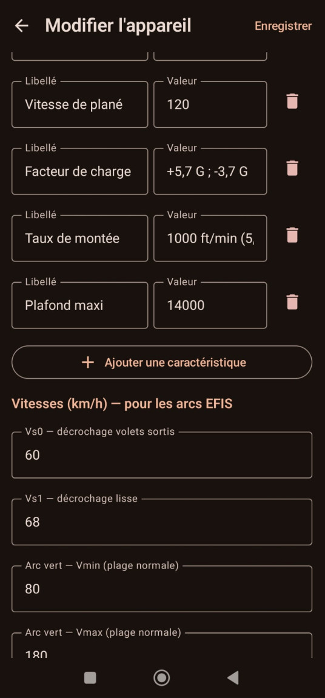

🛩
Appareils
Vos ULMs et avions · vitesses caractéristiques · import/export
Identité · nom / sous-titre / icône
Vitesses · Vs0 · Vs1 · Vno · Vne · Vpl

Possibilités
- Ajout / édition / suppression d'appareils.
- Identité de l'appareil : nom, sous-titre et icône.
Vitesses caractéristiques
- Vs0 — décrochage volets sortis · Vs1 — décrochage lisse.
- Arc vert (plage normale) et arc blanc (pleins volets).
- Vno — vitesse normale maxi · Vne — à ne jamais dépasser.
- Vpl — vitesse optimale de plané.
- Ces valeurs alimentent les arcs colorés de l'anémomètre.
Import / Export
- Import et export d'un appareil au format JSON.
- Via le sélecteur de fichiers Android (SAF).
- L'import sur un appareil existant demande une confirmation avant d'écraser.
Gestes
↕ Touchez le numéro d'ordre pour déplacer un appareil
⋮ Menu de ligne : Modifier · Supprimer · Importer · Exporter